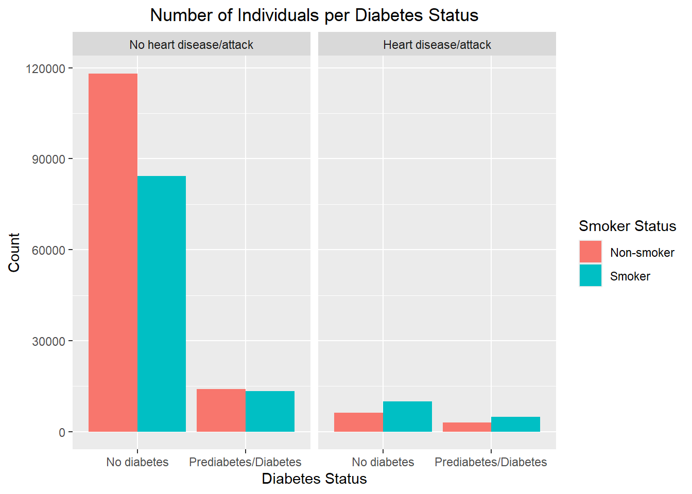
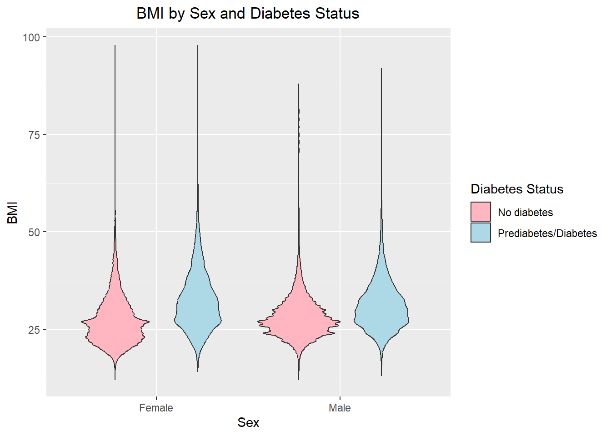
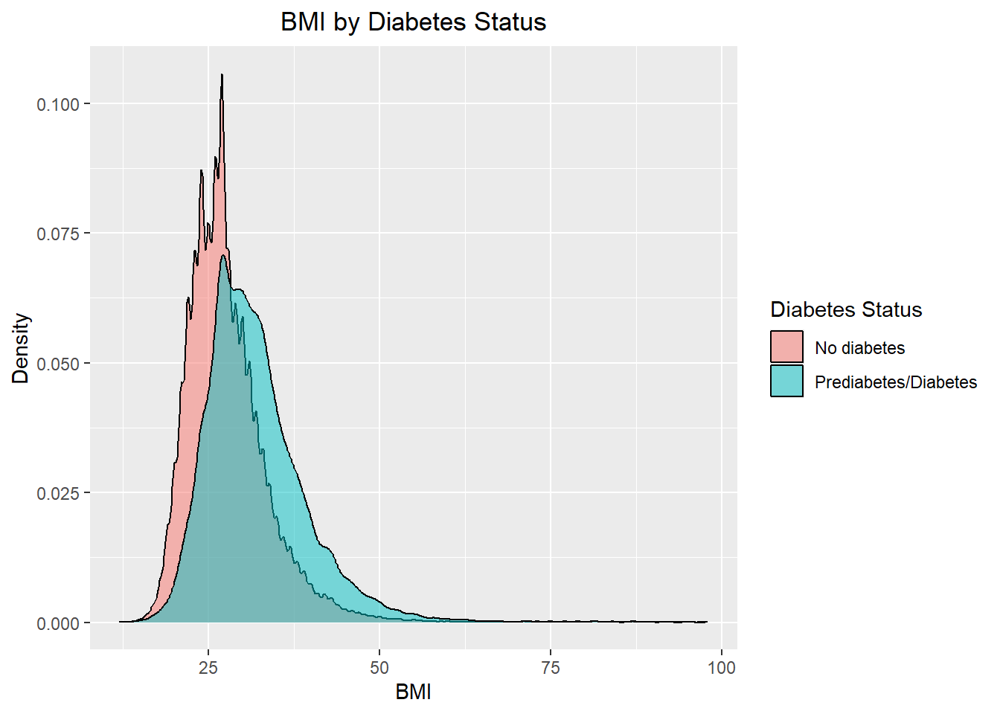
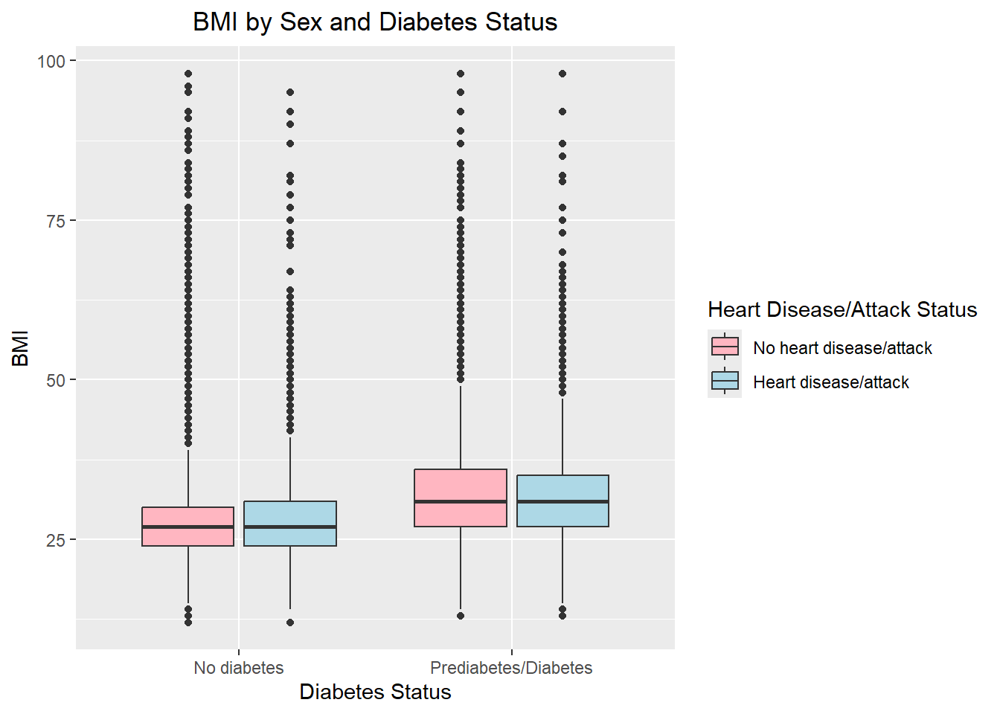
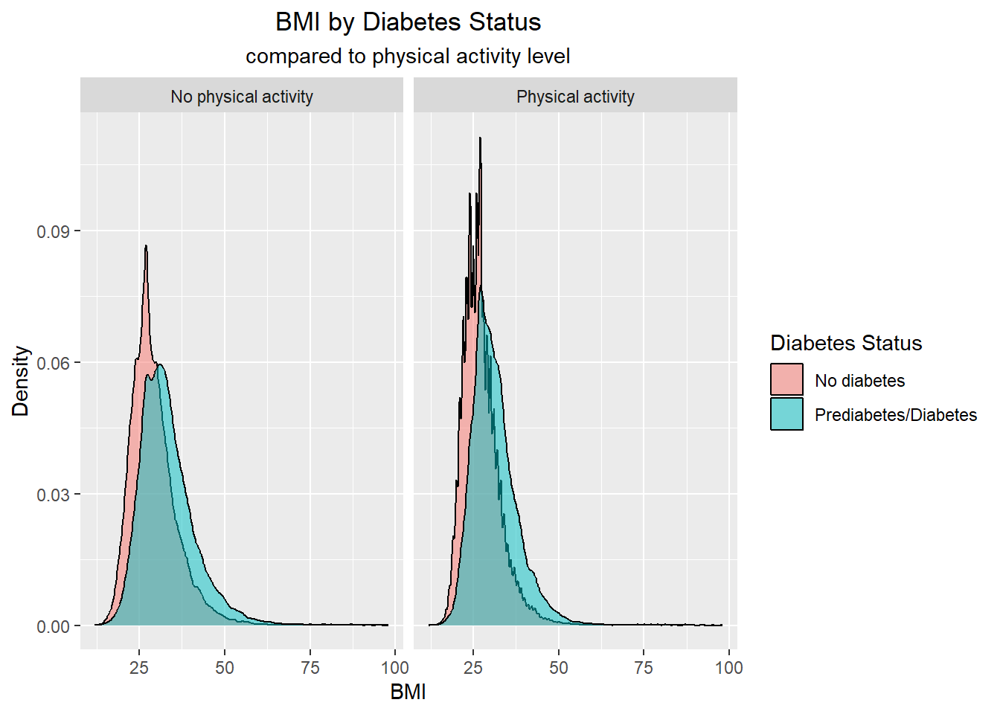
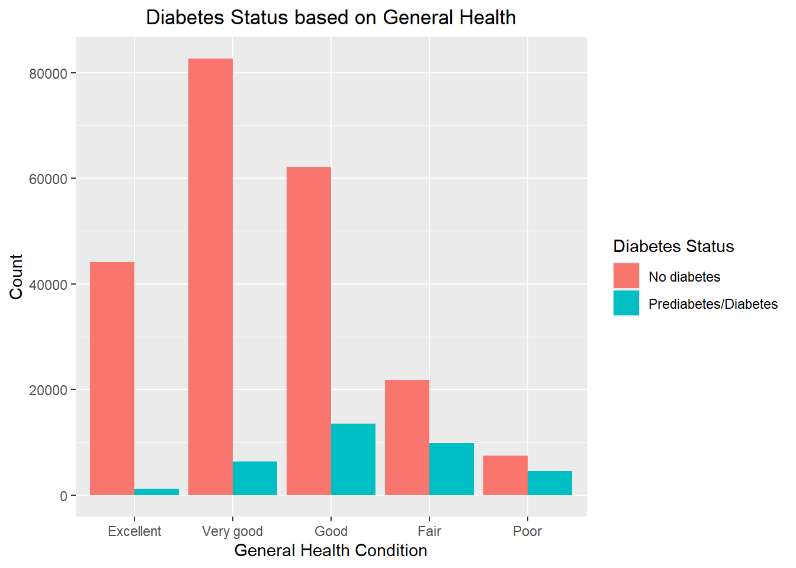

library(readr) #to read in CSV filelibrary(psych) #to describe the datalibrary(dplyr) #to clean the data
Attaching package: 'dplyr'
The following objects are masked from 'package:stats':
filter, lag
The following objects are masked from 'package:base':
intersect, setdiff, setequal, union
library(janitor) #to clean names
Attaching package: 'janitor'
The following objects are masked from 'package:stats':
chisq.test, fisher.test
library(ggplot2) #for plots
Attaching package: 'ggplot2'
The following objects are masked from 'package:psych':
%+%, alpha
library(ggeasy) #for plots
Diabetes Health Indicators Dataset
Intro:
The Diabetes Health Indicators Dataset is a collection of information from telephone surveys that are conducted annually by the CDC. The survey collects responses from over 400,000 Americans on health-related risk behaviors. The data provided and explored within this document is from the year 2015.
Numerous variables are provided in the dataset. However, we will focus on the variables listed below to explore, in relation to our response variable, Diabetes Status. This response variable is provided as a binary variable (diabetes_binary). A 0 value indicates the individual does not have diabetes and a 1 value indicates the individual has diabetes or pre-diabetes.
Other variables of interest, and their possible values (where applicable):
HighBP: 0 indicates no high blood pressure, 1 indicates high blood pressure
HighChol: 0 indicates no high cholesterol, 1 indicates high cholesterol
BMI: Body Mass Index, this is a measure of weight relative to height
Smoker: 0 indicates individual has smoked at least 100 cigarettes in their life, 1 indicates they have not
Stroke: 0 indicates individual has not had a stroke, 1 indicates they have
HeartDiseaseorAttack: 0 indicates individual has not had coronary heart disease or myocardial infarction, 1 indicates they have
PhysActivity: 0 indicates individual has not had any physical activity (outside of job) in the past 30 days, 1 indicates they have
HvyAlcoholConsump: 0 indicates individual is not a heavy drinker, 1 indicates they are (greater than or equal to 14 drinks for men and 7 drinks for women per week)
AnyHealthcare: 0 indicates individual does not have health care coverage, 1 indicates they do
GenHlth: general health level, 1 is excellent, 2 is very good, 3 is good, 4 is fair, and 5 is poor
MentHlth: number of days of poor mental health (1-30 days)
PhysHlth: number of days of physical illness or injury in the past 30 days
First, exploratory data analysis will be conducted to get to know the data. We want to understand how the data is stored, determine the rate of missing values, and clean up the data as needed. We want to investigate the distributions with summaries and graphs to gain some insights into the data and relationships between variables.
Then, we will want to determine which predictive model, a classification tree or a random forest model, is the best model to use to make a prediction for the response variable, Diabetes Status, given specific predictor variables.
The Data:
The data can be found on kaggle.com and is provided in a CSV file.
#read in datadiabetes_data <-read_csv("diabetes_binary_health_indicators_BRFSS2015.csv")
Rows: 253680 Columns: 22
── Column specification ────────────────────────────────────────────────────────
Delimiter: ","
dbl (22): Diabetes_binary, HighBP, HighChol, CholCheck, BMI, Smoker, Stroke,...
ℹ Use `spec()` to retrieve the full column specification for this data.
ℹ Specify the column types or set `show_col_types = FALSE` to quiet this message.
Let’s determine if there are any missing values in the dataset.
All of the variables are being stored as numeric. However, most of these variables should be categorical - they have different levels or categories, and you cannot do math on the values (the results would not make sense). Therefore, we will want to convert them to factors.
As expected, the mean BMI for individuals with diabetes/prediabetes is higher ,at 31, than those without diabetes at 27. Over 30 is considered to be obese, which obesity has been considered a major risk factor for heart disease. The average number of days of physical illness or injury in the past 30 days is also much higher for those with (pre)diabetes at 8 days verses those without at 3.6 days.
The following contingency table will give the number of individuals with/without diabetes based on their age group.
The highest number of individuals with diabetes/prediabetes occurs in the 65-69 age group, and the lowest is the youngest age group, 18-24.
The following contingency table will give us the number of individuals with/without diabetes by sex and by whether they’ve had heart disease or a heart attack.
, , = No diabetes
Female Male
No heart disease/attack 116716 85603
Heart disease/attack 6847 9168
, , = Prediabetes/Diabetes
Female Male
No heart disease/attack 15053 12415
Heart disease/attack 3358 4520
It may be surprising to see that the number of individuals who have heart disease or who have had a heart attack is higher for those without diabetes (for both sexes) than those who do have diabetes/prediabetes.
Let’s view some relationships visually.
The following barplot displays the number of individuals with/without diabetes according to smoker status and whether or not they’ve had heart disease or heart attack.
g <-ggplot(data = diabetes_data)g +geom_bar(aes(x = diabetes_binary, fill = smoker), position ="dodge") +labs(x ="Diabetes Status", y ="Count",title ="Number of Individuals per Diabetes Status", fill ="Smoker Status") +easy_center_title() +facet_wrap(~ heart_diseaseor_attack)

For those who have had a heart attack/disease, more individuals were smokers than non-smokers, but it did not seem to be an indicator of diabetes (there were more smokers and individuals with a heart attack/disease that did not have diabetes). For those who have not had a heart attack or heart disease, smoking status was almost equal (non-smoker vs smoker) for those with diabetes.
The following violin plot will take a look at BMI related to Sex and Diabetes Status.
ggplot(diabetes_data, aes(x = sex, y = bmi, fill = diabetes_binary)) +geom_violin() +labs(x ="Sex", y ="BMI",title ="BMI by Sex and Diabetes Status",fill ="Diabetes Status") +easy_center_title() +scale_fill_manual(values =c("lightpink","lightblue"))

The BMI for both sexes is higher for those with diabetes/prediabetes.
The following density plot also gives the relationship between BMI and diabetes status.
g +geom_density(aes(x = bmi, fill = diabetes_binary), alpha =0.5) +labs(x ="BMI", y ="Density",title ="BMI by Diabetes Status", fill ="Diabetes Status") +easy_center_title()

Just as the violin plot above showed, those with prediabetes/diabetes tend to have a higher BMI.
The following bloxplot will also look at BMI and diabetes status, by those with/without heart disease or heart attack.
ggplot(diabetes_data, aes(x = diabetes_binary, y = bmi, fill = heart_diseaseor_attack)) +geom_boxplot() +labs(x ="Diabetes Status", y ="BMI",title ="BMI by Sex and Diabetes Status",fill ="Heart Disease/Attack Status") +easy_center_title() +scale_fill_manual(values =c("lightpink","lightblue"))

As the other graphs have shown, the mean BMI is greater for those with diabetes/prediabetes. However, the mean BMI is approximately the same (in both diabetes status groups) between those with heart disease/attack and those without.
The following density plot show the BMI by diabetes status and physical activity level.
g +geom_density(aes(x = bmi, fill = diabetes_binary), alpha =0.5) +labs(x ="BMI", y ="Density",title ="BMI by Diabetes Status",subtitle ="compared to physical activity level",fill ="Diabetes Status") +easy_center_title() +theme(plot.subtitle =element_text(hjust =0.5)) +facet_wrap(~ phys_activity)

The density plot shifts slightly right for those who have not had physical activity (outside of work) in the past 30 days, which means more of the individuals that have not had physical activity have higher BMI’s.
The following barplot shows general health based on diabetes status.
g +geom_bar(aes(x = gen_hlth, fill = diabetes_binary), position ="dodge") +labs(x ="General Health Condition", y ="Count",title ="Diabetes Status based on General Health", fill ="Diabetes Status") +easy_center_title()

As health condition worsens, the number of those without diabetes decreases. It is surprising to see that the greatest number of individuals with prediabetes/diabetes have “good” health.
Now that we’ve seen some relationships in the data, let’s take a look at some models that we can use to predict diabetes status.